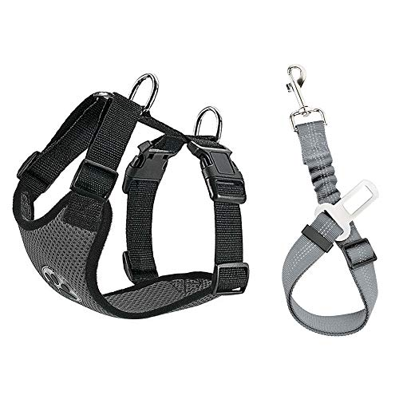
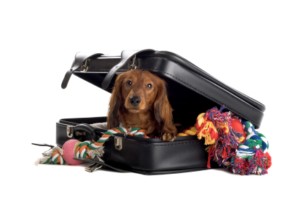
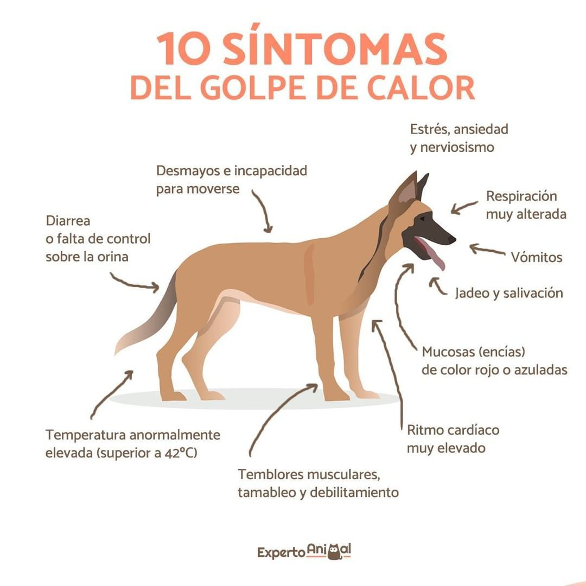
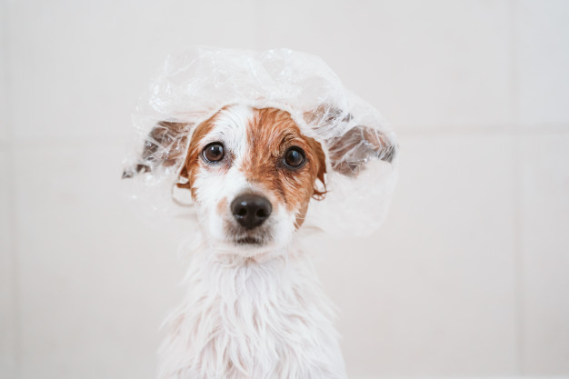
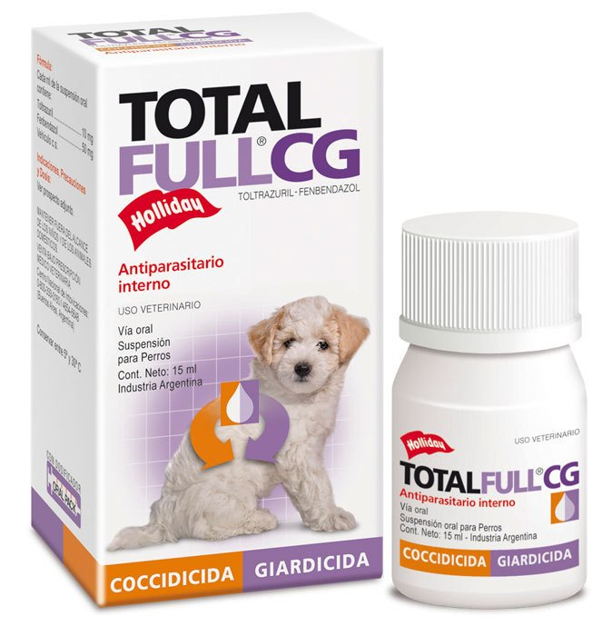

Consejos
Si vas de vacaciones con tu mascota...
- Llevar siempre plan sanitario con certificado habilitante.
- Si vamos en auto,contar con una jaula de transporte si es posible, de lo contrario usar cinturon de seguridad para mascotas que ademas de sus funciones especificas evita que distraiga al conductor
- Intenta parar cada 2 horas, asi tu mascota puede moverse, tomar agua y hacer sus necesidades, evitando golpes bruscos de calor
- Nunca lo dejemos solo encerrado en el auto, ni tampoco dejemos que nuestros perros saquen su cabeza por la ventana, es peligroso.
En destino...
- Recordemos que se sentira excitado por nuevos olores, visiones y al no ser su territorio habitual, puede perderse, por lo que siempore debe llevar collar con identificacion
- Averiguemos la existencia de peligros en la zona, por ejemplo serpientes, alacrantes, etc.
Golpe de calor? Te aconsejamos...
El perro no pierde calor por sudor ya que carece de glandulas sudoriparas, por eso, comienza a jadear, salivar, se debilita y colapsa Entonces, que podemos hacer ante un golpe de calor?
- Limpiar la salivacion para que pueda respirar bien, con una esponja o toalla mojada en la cara
- Llamar urgente al veterinario
- Colocar una toalla humeda sobre el cuerpo y verter agua fria sobre la misma
- Darle agua fresca de beber en forma moderada
Con respecto al aseo
- El aseo ayuda a mantener saludable su piel, pelaje, dientes, encias y uñas, ademas elimina o previene los parasitos externos y trata pieles secas o grasas.
- Se recomienda bañar a tu mascota cada 15 o 20 dias con productos especificos para ellos.
- No olvidemos mantener nuestra casa libre de garrapatas. Para ello podemos fumigar con liquidos antiparasitarios externos. Siempre asesorados por un profesional. Una solucion recomendada para pulgas y garrapatas es el uso de pipetas. Existen gran variedad y precios en el mercado, no son tixicas y mantienen el ambiente controlado. Para un buen resultado consulte a los profesionales.
Tengamos a nuestras mascotas desparasitadas y vacunadas
CLICK AQUI - -> CONSULTANOS!




